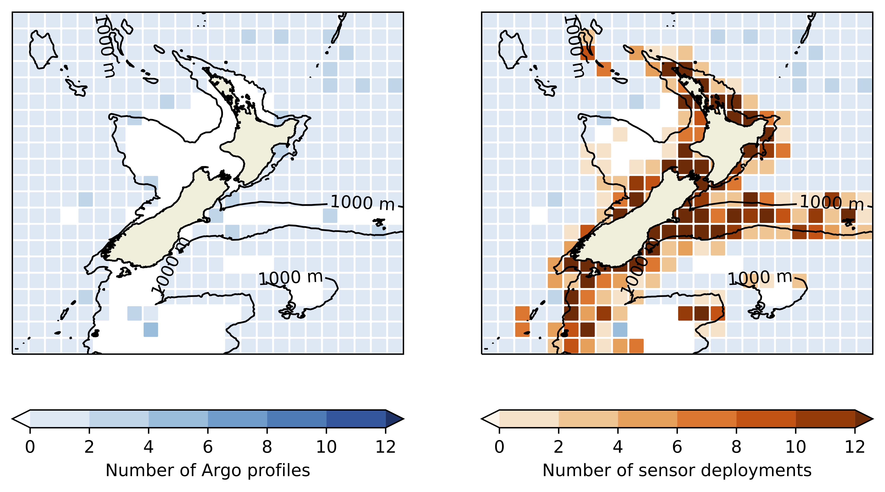
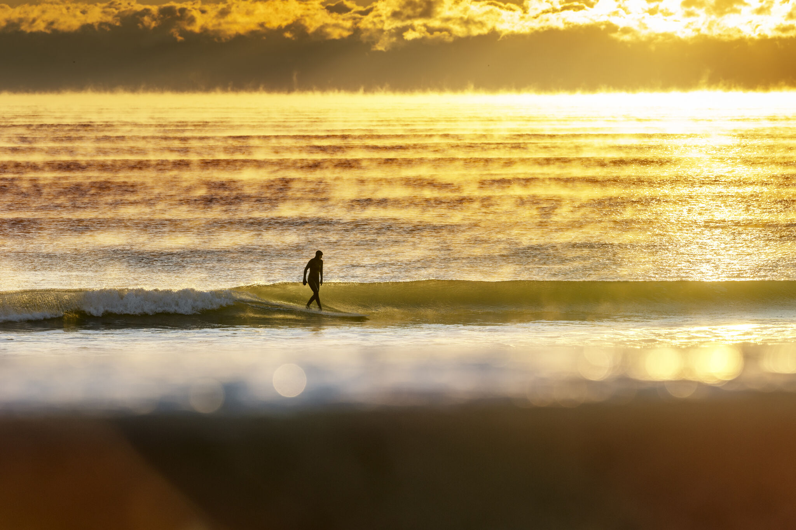

Data Visualisation · Ocean Observing · Technical Project Leadership
Delivering national-scale data outcomes, long-term partnerships, and compelling data insights at the intersection of science, technology, and people.
Research Team Lead & Oceanographic Data Scientist · MetService NZ · 2019–2023 & Aotearoa Moana Observing System · 2023–present
Led the co-design and deployment of an industry-leading, crowd-sourced ocean observing network as part of the multi-million-dollar Moana Project. Designed and built real-time data reporting, interactive data visualizations, and geospatial tools making critical oceanographic data accessible to diverse users nationwide: scientists, fishers, iwi, policymakers, and the public.
Research Team Lead · MetService NZ · 2019–2024
Designed the end-to-end data visualization pipeline for a national ocean observing network. Built interactive dashboards and geospatial visualizations that translated raw oceanographic sensor data into intuitive, decision-ready tools for diverse audiences. Led a successful campaign to transition New Zealand's oceanographic community from closed to open data, communicating both the cultural and technical motivations behind the shift.
Project Manager & Program Lead, MetService NZ & Aotearoa Moana Observing System · 2023–present
Delivered the final phase of the nation-wide Moana Project, ensuring budget compliance and timely completion by monitoring finances, risks, and timelines. Currently co-coordinating the transition of a novel ocean observing system from MetService to an independent non-profit trust, including all stakeholder relationships and communications strategy. Founding member of an international ocean observing steering committee.
A multi-million-dollar program that designed, built, and deployed a nationwide crowd-sourced ocean observing network. The Te Tiro Moana ("Eyes on the Ocean") theme of the project transformed how New Zealand collects, shares, and uses ocean data, shifting from a closed-data culture to open data, engaging hundreds of stakeholders across sectors, increasing the number of research-quality, subsurface ocean temperature observations by 40x, and delivering real-time environmental intelligence to the entire country.

The Moana observing network; a subset of three years of crowd-sourced ocean data collection across Aotearoa New Zealand (Jakoboski et. al., 2024). Every dot represents sensor deployments that feed into real-time dashboards and visualizations.
Python, Spark, Docker for processing & QC, HTML, Javascript, Power BI for interactive dashboards, geospatial tooling for mapping. End-to-end pipeline from raw sensor data to public-facing visualizations.
A national observing network delivering open ocean data to government, industry, researchers, and communities.
Extensive stakeholder co-design, indigenous data sovereignty partnerships, and a strategic shift to open-data infrastructure.
Hundreds of stakeholders engaged, national media coverage, international conference presentations, and founding membership on a global ocean observing steering committee.
Data scientist, program director, and project lead with 18+ years delivering measurable impact in oceanography, research project leadership, science communication, and stakeholder engagement.
Led the co-design and deployment of a nationwide, crowd-sourced ocean observing network across Aotearoa New Zealand, including genuine stakeholder co-design, open data advocacy, and data delivery for diverse users locally and internationally.
Utilizes a MIT/WHOI Ph.D.-level analytical approach combined with practical, hands-on experience and clear, effective communication to drive program delivery and stakeholder strategy. Invests in building long-term partnerships across industry, government, and community lines.
I spent as much time outdoors as I can outside of work, including through surfing, trail running, cycling, and open water swimming.
I also enjoy mentoring STEM students, community outreach, and coaching Girls on the Run, while also finding time to play flute in local ensembles.
